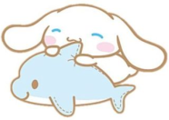
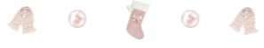
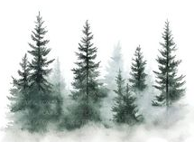
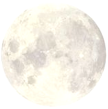
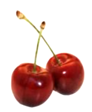
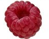
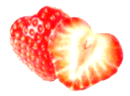

cinnamoroll
I'm not too sure why Cinnamoroll
reminds me of you. It could be
the fact that he was the only close
one in sanrio. But yet he's so far.
However every thing surrounding
him reminds me of you. It makes
me think of you anytime I see him.
I couldn't tell you why.
 I think you, my husband, are these two colors,
green and red. First off, I feel like you'd be more
of a misty snowy evergreen tree forest, with the
wind blowing. It's cold, but it's not so cold to the
point you're freezing. It's like a breeze that sends
chills down your spine because it's so sweet and
nice that it's refreshing and makes you feel excited
and happy. It's still cold but it's a cold you can
embrace. The type you could sit in for hours without
budging because its so good. You'd be a deep ever
green, because deep colors are so calming. You're a
very calm and lighthearted person, in which gives
you the dark green. However it's an evergreen in
the snow specifically because it gives it such a soft
color, and snow gives it such a soft crunch. It's
exactly how sweet in a soft sense you are with me.
Even when we are joking around you still make sure
to be sweet with me and make sure I know you're
joking. You take care of my every need. It also
represents the way you texts. You text in all lower
case in which I adore. It sets such a soft tone. The
caps every so often, the lower case most of the
time. The periods sometimes. I love how you speak
and never want you to change a single thing about
it. You'd be an evergreen because their winter beauty
is immaculate. Their beauty goes beyond what any
has seen, in which is how i feel with you.
The moon reminds me of you because, despite the
way your love me makes me feel, I feel like you are
the moon. You're so cool in nature and calm, with
your own spark. Youre just like the moon because
it glows extremely bright yet it's so underrated.
Everyone sleeps through the beauty of it but when
I look at it I have to hold my breath, the sight is so
beautiful. Thats how I feel with you. It also reminds
me of you because you're such a night owl. Youre
either up so late or you're sleeping constantly. I <
believe it matches your energy perfectly. And
the way the moon has imperfections in it, such
as its craters. But those are what make it beautiful.
It wouldn't be complete without its "imperfections".
An nothing or no one is ever perfect. The fact you
have imperfections shows you do actually feel things
and you are human and not just some follower of
other people. Your your own self and I appreciate
that. Just like the moon. Its also not as if people don't
see your beauty I'm sure they do, but it's so missed
out on by a lot. But the moon is so beautiful it has
so many people who lived to study it. I believe I'll
always be there for you to love and admire you.
Cherries remind me of you because of the times
you've said you've like them. Ever since that day
they've reminded me of you. Cherries also symbolize
quite a bit of things. The ones that fit most for us are
love/romance, beauty, desire, production/happiness,
and strength/motivation. Love reminds me of us be
cause I love you so much. Beauty, because you've
shown me that I can find myself beautiful in so many
ways, and you yourself find me beautiful. It's also be
cause you are the most beautiful guy I've ever met.
Your looks go beyond this world. Honestly don't know
how you look how you do because you're so perfect.
Desire is one because I trust we both desire one another
in many ways. Production and happiness because you
have already been such a help in both of these for me.
Of course I don't depend on you for it but you've definitely
shown me I can be happy and productive. Lastly strength
and motivation. Motivation being the same, strength being
very similar.
As for red I feel like you'd be a deep raspberry. The deep color
shows how calm you normally are, with the tangy sensation of the
raspberry showing odd other sides of your personality. The way
raspberries are so messy represents you perfectly, as you can be a
bit scatterbrained, but the ridges and everything on the raspberry
are so perfect no matter any "imperfections" it's still perfect, and
shows how perfect in my eyes you are and how amazing you are
It also gives away how kind you are. The way you are is why I love
you and I hope you never changes for anyone because you're
perfect.
Strawberries remind me of you because when I brought
up my love for them with you, it has only grown, such as my
love for you has grown. Strawberries are so sweet exactly like
you. Even with bumps and mishaps in the strawberries I'd still
eat them gratefully because despite the imperfections, the taste
is still the same. It will always have that sweet taste that you can
never get over. Just like how I'll never get over how sweet you
are. And no matter the imperfections you show me is still run
right back to you happily. It also reminds me of you because
strawberries symbolize love, fertility, and new beginnings. The
fertility not so much, but the love and new beginnings relate to
you so much. The love one because u love you closely and dearly.
The new beginnings because genuinely you've given me things I
never knew I could even have. And you treat me so differently.
You've healed me and loved me in so many ways.